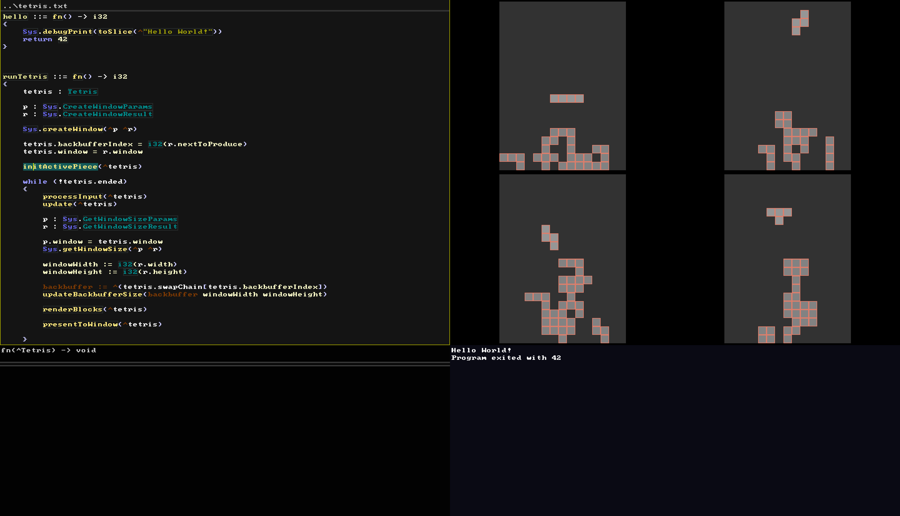

ugri
The shortest path from hardware to applications, and the joy of creating along the way.

Proof of Concept: A self-contained programming environment running on Windows, where developers can create and run windowed and console applications.